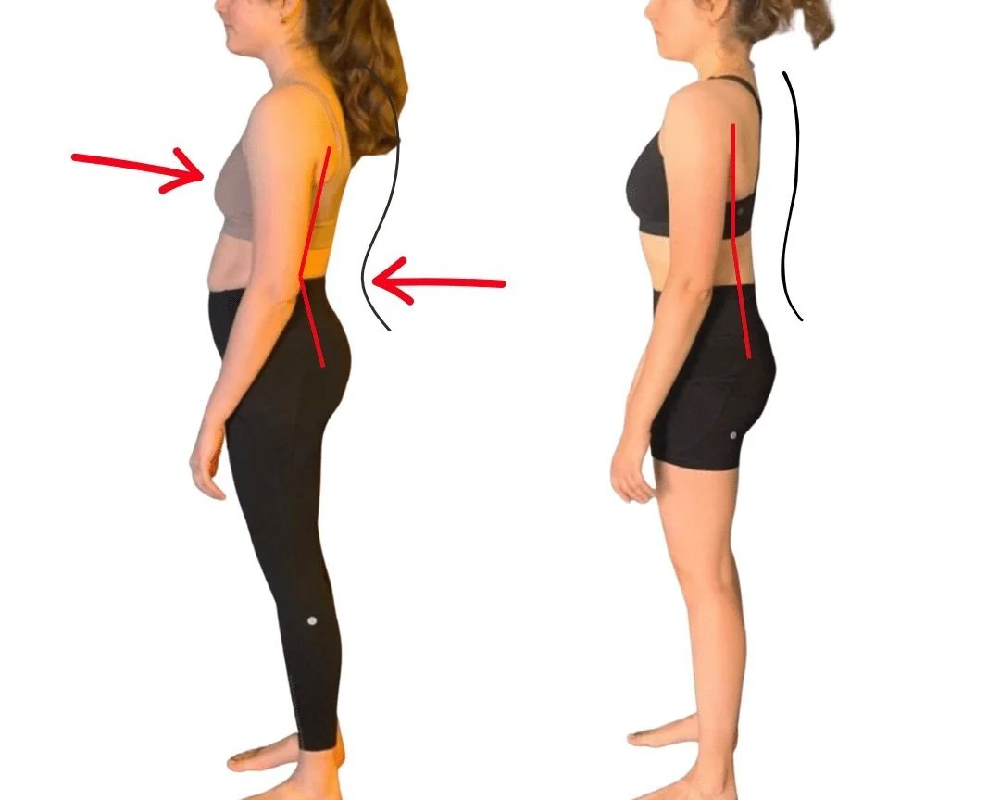
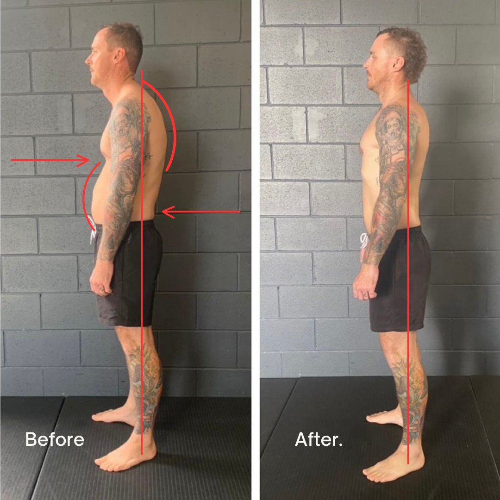
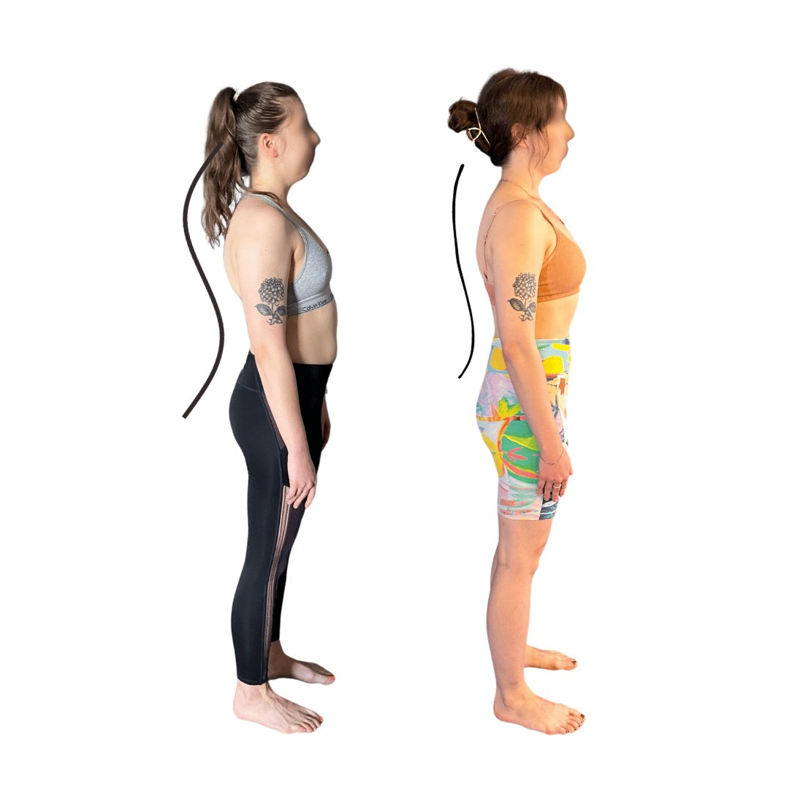

ARTICLE SUMMARY
-
Uncover the Truth: Learn why simple advice like "stand up straight" doesn't address the root causes of posture issues.
-
Biomechanical Insights: Dive into the fundamental principles of gait and movement that are key to correcting kyphosis and lordosis.
-
Success Stories from Brisbane: Be inspired by real-life transformations achieved through our tailored natural therapy programs.
-
Beyond Surface Fixes: Understand why addressing kypholordosis goes deeper than just strengthening exercises or temporary adjustments.
-
Expertise in Motion: Explore our unique methodology that combines biomechanical understanding with practical interventions for long-lasting posture correction.
-
Client Transformations: See the remarkable before and after results that showcase our commitment to improving spinal health and overall well-being.
-
The Role of Sedentary Lifestyles: Discover how prolonged sitting impacts your posture and what we do to counteract these effects for a healthier spine.
-
A Holistic Approach: Learn about our focus on movement, core and glute activation, and the importance of correcting daily habits for sustained posture improvement.
Why Fixing Your Kyphosis, Lordosis & Posture Has Not Worked So Far:
In addressing the complex nature of kypholordosis correction, it's crucial to understand that simple directives to "stand up straight" or generic advice to "get stronger" fall significantly short of what's required for meaningful and sustainable posture improvement. This approach overlooks the intricate biomechanics of the human body, particularly the fundamental principles of gait that are essential for correcting dysfunctional patterns in movement. Brisbane residents seeking natural therapy for kyphosis and lordosis must realise that these conditions are symptomatic of deeper biomechanical issues, not merely a matter of weak muscles or poor habits.
Exercises that fail to adhere to the biomechanical principles of gait often exacerbate the problem, reinforcing dysfunctional movement patterns rather than correcting them. This is because posture is not simply about how we stand; it's intrinsically linked to how we move. Kypholordosis, for instance, is not just a static issue to be corrected by holding a certain pose but a dynamic one that arises from the cumulative impact of our daily movements and behaviors. Addressing it requires a nuanced understanding of the body's natural locomotion and the interconnectedness of its muscular and skeletal systems.

Transform Your Spine: Leading Natural Therapy for Kyphosis and Lordosis in Brisbane
At Functional Patterns Brisbane, our approach to posture correction and spinal health transcends conventional exercise routines that often neglect these critical aspects. We recognise that true, relaxed posture changes and effective kypholordosis rehabilitation stem from an expert understanding of the body's intended movement patterns. Our tailored natural therapy programs in Brisbane are grounded in the principles of human biomechanics, particularly focusing on the gait cycle, to ensure that every exercise and intervention not only alleviates symptoms but also addresses the root causes of the dysfunction.
By meticulously analyzing and correcting the way our clients move, we aim to in still changes that resonate through their entire body, promoting a balanced and naturally aligned posture. This level of expertise and dedication to understanding human movement is what sets our natural therapy for kyphosis and lordosis in Brisbane apart, offering a path to genuine, lasting relief from the discomfort and limitations imposed by kypholordosis. It's a journey that goes beyond superficial fixes, delving deep into the biomechanical intricacies of the body to unlock the potential for optimal health and movement efficiency.
Client Success Stories: Natural Kypholordosis Correction in Brisbane
Our Brisbane facility boasts remarkable kypholordosis postural transformations, showcasing our commitment to natural treatment and excellent results. Clients who have chosen Functional Patterns Brisbane for their kyphosis and lordosis rehabilitation have experienced life-changing results such as the following:
5 Month Natural Kypholordosis Postural Transformation

Natural Kypholordosis
5 Month Kypholordosis Postural Transformation
“I started FP to try and address my poor posture and the persistent pains in my lower back and knees. Since working with Shane I have really had to reflect on the daily habits and patterns that had been making me so uncomfortable in my own body. Prior to this I had been generally eating healthy and exercising with Pilates and yoga, however the improvements I have felt in my posture and wellbeing since stating FP in September 2021 have been incomparable. I think it has a lot to do with how focused Shane is on ensuring the specific and precise execution of each movement to engage and work the whole body in an integrated manner. You leave feeling both exhausted and energised, I always have an extra bounce in my step after training. I feel I have also gained a sense of purpose and drive to develop and maintain better mobility, strength, and balance well into my older age”
— Irinie, FP Brisbane Client Pictured
Before:
❌ Insufficient Intra-Abdominal Pressure: A key indicator of core weakness, crucial in posture correction strategies.
❌ Pelvic Anterior Shift with Reduced Glute Engagement: Highlighting the need for targeted glute strengthening exercises in Brisbane.
❌ Absence of Thoracic Extension and Forward Head Posture: Common issues addressed in kyphosis natural therapy.
❌ Presence of Knee Valgus: Underlining the importance of knee position correction in comprehensive posture rehabilitation.
❌ Inadequate Shoulder Support: Noted through underactive lats and upper traps, a focus area in lordosis correction exercises in Brisbane.
After:
✅ Enhanced Intra-Abdominal Pressure through TVA Recruitment: Demonstrating effective core strengthening as part of our posture correction services.
✅ Improved Glute Engagement: Key to addressing anterior pelvic shift, central in our natural therapy for kyphosis and lordosis in Brisbane.
✅ Corrected Knee Position: A critical component in our holistic approach to lower body alignment and knee valgus correction.
✅ Achieved Thoracic Extension with Corrected Head Position: Essential outcomes in our targeted kyphosis and forward head posture correction exercises.
✅ Active Engagement of Lats and Upper Traps: Resulting in balanced shoulder support, showcased in our lordosis rehabilitation program.
8 Month Natural Kyphosis result from Functional Patterns Brisbane
Let’s look at another example. The following is an 8 month results from our facility:

Natural Kyphosis result from Functional Patterns Brisbane
✅ Improved kyphosis and forward head
✅ Improved scapula position
✅ Reduced anterior hip shift and knee hyper-extension
✅ Now in little to zero pain
✅ Less inflammation / Improved abdominal pressure
✅ Reduced body fat
“Before starting FP I was in chronic pain from head to toe on the left side of my body and had suffered constant headaches for most of my adult life... After 8 months training with Jen I can now move better, with more tension in my body and I’m completely pain free. Mentally I feel great now and at 35 years old this is the best I’ve ever felt in my life. ”
— Matt, Client Pictured
Understanding Kyphosis and Lordosis: Pathways to Natural Correction
In the realm of biomechanics and body wellness, two common conditions often discussed are kyphosis and lordosis. These spinal curvatures can lead to discomfort, chronic pain, and posture issues. However, with advancements in biomechanical understanding and tailored interventions, natural correction of these conditions is not just a possibility; it's a reality that we witness through transformative before and after results.
Kyphosis, commonly known as a "hunched back," is a condition characterised by an excessive outward curve of the spine, leading to a rounded back appearance. This curvature can result in pain and stiffness in the back, affecting one's ability to perform daily activities comfortably. The question that often arises is, "Can you fix a kyphosis?" The answer is a resounding yes. With targeted biomechanical strategies and a comprehensive approach to treatment, significant improvements in posture and pain relief are not only possible but expected.
Lordosis, on the other hand, refers to an exaggerated inward curve of the lower back. This condition can cause an appearance of a more pronounced lower back curve, leading to discomfort and, in some cases, pain that radiates through the lower body. Like kyphosis, individuals often wonder if lordosis can be corrected naturally. Through our specialised biomechanical interventions, we've seen remarkable before and after transformations that address the root causes of lordosis, offering a path away from pain and towards optimal spinal health.
Our Brisbane-based biomechanics business stands at the forefront of addressing these conditions, offering hope and real results where traditional methods might fall short. Unlike conventional approaches taken by chiropractors, physiotherapists, and exercise physiologists, our unique methodology dives deep into the biomechanics of the body. By understanding the intricate details of how the body moves and compensates, we tailor interventions that not only alleviate symptoms but fundamentally correct the underlying imbalances causing kyphosis and lordosis.
The star of our approach lies in the undeniable evidence of our before and after pictures. These images capture more than just a change in posture; they encapsulate a journey from chronic pain and discomfort to freedom of movement and a renewed sense of vitality.
Transforming Posture Naturally: The Key to Overcoming Kypholordosis in Brisbane
Embarking on the journey to correct kypholordosis begins with an essential first step: decompressing our body's structure. This critical phase involves engaging our glutes effectively during contractions and making optimal use of our Transversus Abdominis (TVA) and lower core muscles. Incorporating thoracic extension exercises into our daily routines is paramount for achieving this goal.
The Nutritional Link to Spinal Health
Our dietary choices play a significant role in our posture. A distended gastrointestinal tract can limit the TVA's ability to contract effectively, as it remains stretched from internal swelling. Thus, adopting a diet that minimises bloating is crucial in managing both kyphosis and lordosis, offering a natural pathway to better posture.
Core and Glute Strength: The Foundation of Spinal Correction
For those seeking natural therapy for kyphosis and lordosis in Brisbane, focusing on strengthening the deep core and lower back muscles is vital. This not only supports the spine more effectively but also establishes a balance of tension within the torso. Specifically targeting the upper gluteal muscles can significantly address the root causes of kypholordosis, as these are often neglected yet crucial for spinal alignment.

The Counterproductive Nature of Stretching in Kypholordosis
While stretching is widely regarded as beneficial for many musculoskeletal issues, it can actually exacerbate kypholordosis. Stretching the already lengthened muscles of the glutes and lower core further away from their optimal length decreases their force generation capacity, thus weakening spinal support. The focus, instead, should be on strengthening these muscles to provide a sturdy foundation against kyphotic and lordotic curves.
Embracing Contraction and Tension for Spinal Health
Addressing kypholordosis with natural therapy involves fostering strength and tension in the glutes, core, and upper thoracic muscles. Exercises designed for glute activation, core stabilisation, and thoracic engagement are key to reversing the effects of kypholordosis. By optimising the length-tension relationship of these muscles, we support the spine more effectively, promoting healthier posture.
Combatting Kypholordosis: The Critical Role of Core and Glute Activation in Counteracting Sedentary Lifestyles
In the modern world, the prevalence of sedentary lifestyles, particularly the extended periods spent sitting, plays a significant role in the development of postural issues like kypholordosis. This condition, a complex interplay of kyphosis (an exaggerated forward rounding of the back) and lordosis (an excessive inward curve of the lower back), is intricately connected to the functionality of our core and gluteal muscles.
At Functional Patterns Brisbane, where we specialise in natural therapy for kyphosis and lordosis, a critical focus is placed on understanding and correcting the underlying causes of these postural deviations.
The Impact of Prolonged Sitting on Glutes and Core
Prolonged sitting places the glutes and core muscles in a perpetually lengthened, inactive state. This inactivity, or "switching off," of the glutes and core due to their flaccidly lengthened position contributes significantly to postural imbalances. When these critical muscle groups are not engaged effectively, they lose their ability to support the spine properly. This lack of support and engagement is a key factor leading to the development of kypholordosis.
In a seated position, the natural curvature of the spine is compromised, placing undue stress on its structure. Over time, this can lead to a weakening of the muscles meant to support and stabilise the spine, further exacerbating postural issues. The core and glutes are fundamental in maintaining an upright posture and facilitating efficient movement patterns. Without their proper engagement, the body compensates in detrimental ways, often resulting in the characteristic forward head posture and exaggerated spinal curves of kypholordosis.
Gravity's Role in Postural Deviation
Upon standing from a prolonged seated position, gravity acts upon the weakened structural support, pulling the body into a kypholordotic posture. This gravitational pull, combined with weakened core and gluteal muscles, forces the body into an alignment that further perpetuates the cycle of dysfunction. The core and glutes, when properly activated and strengthened, serve as the foundational support against gravitational forces. However, their inactivity leads to a reliance on other, less suitable muscles for postural support, setting the stage for chronic pain and mobility issues.
Addressing Kypholordosis with a Focus on Movement
At our Brisbane-based facility, we address these challenges head-on by emphasising the importance of movement and proper muscle engagement. Our posture correction strategies and kypholordosis rehabilitation programs are designed to reactivate and strengthen the core and glutes. By doing so, we counteract the adverse effects of sedentary behavior and gravity on the body's posture.
Our approach is grounded in the fundamental principles of human gait and biomechanics, ensuring that every intervention we undertake is aimed at restoring natural movement patterns and achieving a balanced, functional posture. Understanding that posture is a dynamic issue, influenced by how we move and not just how we stand or sit, is crucial. Our natural therapy programs in Brisbane are tailored to educate and empower our clients, enabling them to make the necessary adjustments to their daily routines and activities.
This holistic approach ensures that the core and glutes are not only engaged during exercise but throughout the day, promoting a posture that is resilient to the forces of gravity and capable of supporting the body in all its functions. By tackling the root causes of kypholordosis, such as the inactivity of the glutes and core from prolonged sitting, we pave the way for our clients to achieve a healthier spine and a more vibrant life. This journey toward optimal spinal health and posture correction is a testament to the power of understanding and working with the body's natural biomechanics.
As we conclude our exploration of the complexities behind correcting kyphosis, lordosis, and posture issues, it's clear that achieving a balanced, healthy spine requires more than superficial remedies. Through the insights and real-life success stories shared from Functional Patterns Brisbane, we've highlighted the critical importance of addressing the root biomechanical causes of kypholordosis. Here’s a summary of the key takeaways:
-
Deep-Dive into Biomechanics: Understanding the intricate relationship between our body's structure, the fundamental principles of gait, and movement patterns is essential for effective posture correction.
-
Beyond Conventional Wisdom: The limitations of traditional advice like "stand up straight" and generic strengthening exercises underscore the need for a targeted, science-based approach to spinal health.
-
Transformative Client Journeys: The remarkable before and after transformations of our clients serve as powerful testimonials to the effectiveness of our tailored natural therapy programs in Brisbane.
-
Comprehensive Methodology: Our success lies in a holistic strategy that combines biomechanical analysis, personalised exercise interventions, and lifestyle adjustments to address kypholordosis at its core.
-
Impact of Sedentary Lifestyles: We've discussed how prolonged sitting affects spinal health and offered solutions to counteract these effects, emphasising the importance of core and glute engagement.
-
A Path Forward: The journey to improved posture and spinal health is ongoing, requiring dedication, expert guidance, and an understanding of the body's natural mechanics.
At Functional Patterns Brisbane, we are committed to guiding you through this journey, offering expert insights and bespoke interventions to ensure not just temporary fixes but lasting changes to your posture and overall well-being. If you're ready to transform your approach to spinal health and embrace a life free from the limitations of kypholordosis, our team is here to support you every step of the way.
Unlock Your Potential: Transform Your Posture with Brisbane's Premier Natural Therapy Program
Ready to leave kyphosis, lordosis, and chronic posture issues behind? Join the Movement Revolution at Functional Patterns Brisbane. Our expertly designed programs are not just about temporary fixes; they're about transforming your life from the ground up. With a focus on the underlying biomechanics of your body, we promise not just improvements but real, sustainable change.
Take the First Step Towards a Healthier, Pain-Free Life Today! Contact us to schedule your personalised assessment and discover how our innovative approach to spinal health can make a profound difference in your well-being.
Book Your Consultation Now - Embrace the journey to optimal health and posture. Let's reshape your future together at Functional Patterns Brisbane.